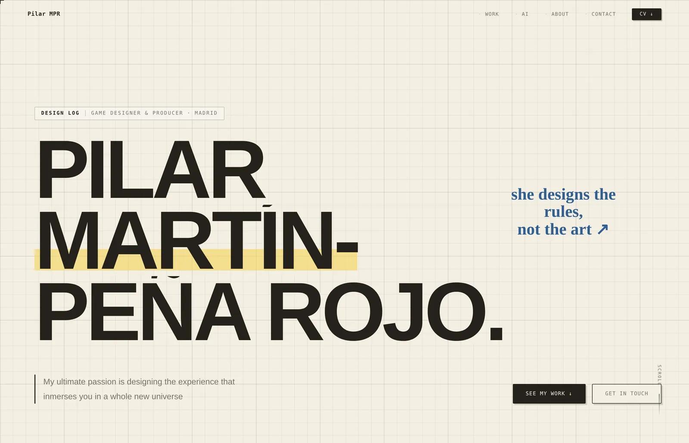
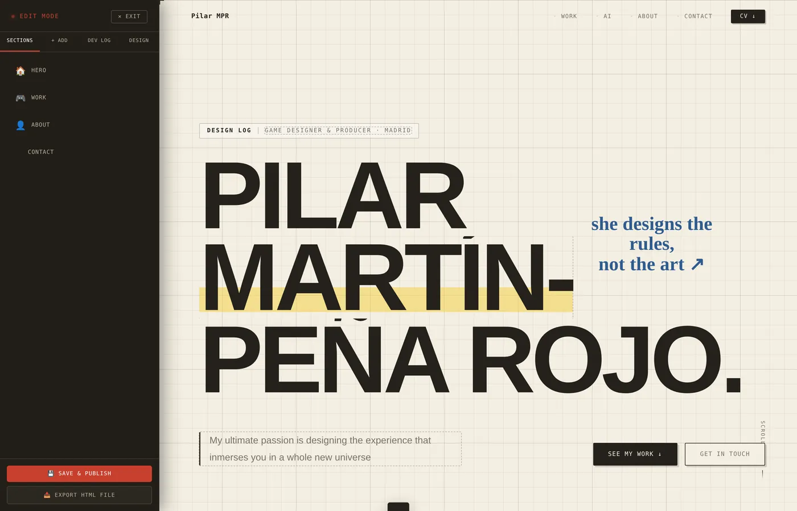

Systems Notebook
What is Systems Notebook?
It is the site you are reading. A static portfolio with no build step, no dependencies and no framework — five plain HTML files, one stylesheet and one script, served exactly as they sit in the repository.
A hidden gesture turns the live page into an editor. Text becomes editable in place, images can be swapped, cards and sections can be added — and one button commits the result straight back to GitHub. Most of the commit history was written by the site, not by hand.
Publishing is a DOM snapshot
There is no CMS and no server. Publishing clones the live document, strips the editor out of the clone, serializes it, and writes it back as a single commit through the GitHub git-data API — blobs for the page and any pending media, one tree on top of HEAD, one commit, one ref update.
Uploaded images are committed as real files under assets/ rather than base64'd into the page, so the HTML stays readable and the browser can cache them.
Three constraints that shaped everything
- One flat script in global scope — no modules, no bundler, no package manager.
- Anything the site needs at runtime it builds at runtime.
- The whole repo can be opened straight off disk and still work.
- No published page contains any editor markup — the panel is constructed on entry and removed from every publish.
- A served page is about half the size it would otherwise be.
- New editor UI lives inside that subtree, so it is removed for free.
The third constraint is the one worth being honest about: the entry gesture and the missing markup hide the editor, they do not protect it. The script is served to every visitor, so both can be patched out. What actually protects publishing is the GitHub token, because only GitHub can check it — server-side, where no amount of client-side patching reaches.
Three storage planes
Editable text lives in localStorage, keyed per page and per field. Uploaded images and clips live in IndexedDB until they are published, keyed by the repo-relative path they will eventually occupy. Published dev-log entries are baked into the HTML as JSON, and the loader merges the two — the local copy wins, but anything baked in that the browser has never seen is kept, so a cleared browser never drops live content.
The theme works the same way: a handful of seed colours and two font names are expanded into a full set of CSS custom properties — shades, transparent tones, a luminance-derived dark mode — and written to a stylesheet on publish, so every page picks up the same palette instead of each carrying its own copy.
What it is good for
Updating a case study takes about a minute and needs nothing installed. There is no CMS to keep patched, no account to renew, and nothing between the writing and the published page except a commit.
There is also an export path: one button inlines the stylesheet, the script and every referenced asset as data URIs and rewrites the internal links, producing a single HTML file that works offline — a portfolio that can be emailed as an attachment.
